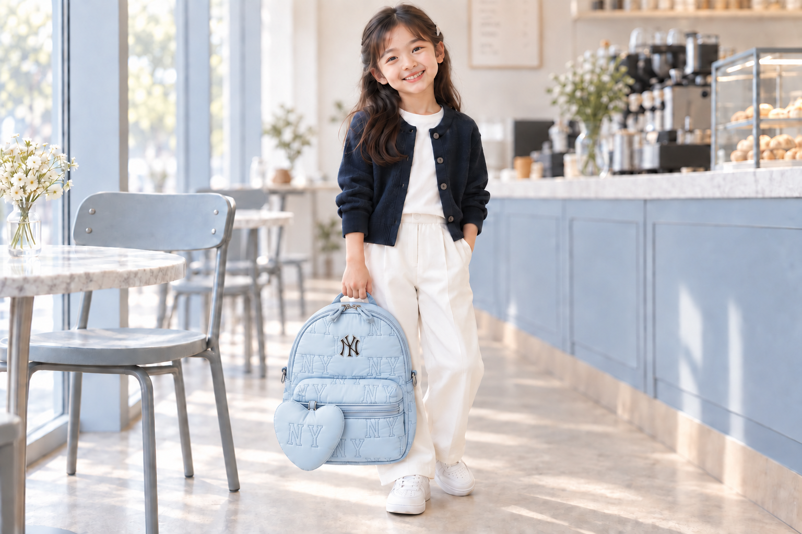

NY monogram quilting
A repeating NY pattern and front logo.
Details in matching shades of blue.
THE LITTLE BLUE EDIT
Monogram Quilted Mini Backpack
Soft blue meets an NY pattern and a heart detail.
SKY BLUE
The image above is the supplied original product photo.
A subtle shade. A rounded silhouette.
Add a little accent to everyday style.

A repeating NY pattern and front logo.
Details in matching shades of blue.
A heart charm that complements the bag.
A sweet touch for a little silhouette.
Detail images are enlarged views of the supplied product photo.
From the top handle to the front zip pocket,
explore the bag's shape in the original photo.
Easy everyday outfits, with a little color.
Explore styling ideas with an AI child model aged around 7–9.


Please check the listed measurements before purchasing.
ABFront view of the product
SIZE F
Values are from the supplied size chart. The original chart does not specify a unit; this must be confirmed before sale.
Measurements may vary depending on where they are taken. Refer to the dimensions above and the original photo rather than the AI-generated images.
AI-generated outfit and styled images are for styling reference only. Colors, logos, proportions and hardware details may differ from the actual product. Please prioritize the supplied original photo and product information when checking the product.
Colors may appear different depending on your screen and lighting.
Additional product name, category and composition details: Official MLB information for the same style code
Please check the seller's information for price, shipping, exchanges and returns.